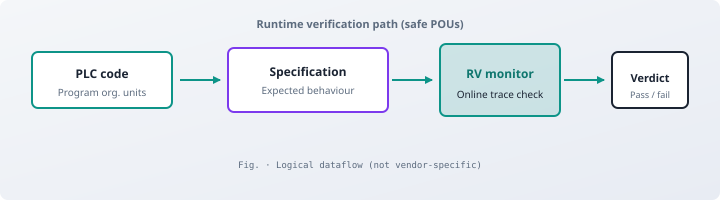

I build and study reliable software where formal methods, data systems, and AI meet—runtime verification and specifications in my PhD; streaming stacks, backends, and shipped products in industry.
Computer Science PhD, University of Genova · Genova, Italy
Specify and verify behaviour under load: monitors, formal specs, and experiments that pin claims to traces—not slide decks.
Ship streaming pipelines and services with measured throughput (e.g. 10⁷-scale events/day) and operable runbooks, not “works on my machine.”
Train and evaluate ML only with held-out metrics and baselines—e.g. CNN classifiers at ~93% accuracy where labels and failure modes are explicit.
Impact Highlights
30M+ events/day processed in production streaming pipeline
DSN 2025 publication · IEEE/IFIP dependable systems conference
5,000+ students & 200+ schools on shipped education platform
Industrial PhD · verification tooling co-built with industry partners
Systems at scale: Spark · Kafka · HBase · PostgreSQL analytics stack
How I Build Systems
Principles I default to—whether the stack is streaming analytics, a web product, or verification tooling.
Load and failure before features. Sketch callers, rough rates, and what breaks when traffic or data spikes—then pick queues, partitioning, or batching when profiling shows a real bottleneck, not on day one for every box.
Boring boundaries. Clear schemas, explicit error paths, and logs you can search; keep “clever” behind small modules you can test and replace.
Reliability matches risk. Tighter invariants, tests, or monitors on money, safety, and data you cannot easily roll back; lighter guards where mistakes are cheap and fixable.
Correctness where there is a spec. Wire checks to written behaviour—API contracts, migrations, formal specs, or runtime monitors—so reviews argue about intent, not guesswork.
One repeatable path to prod. Scripted build and deploy, pinned versions, minimal hand-tuned laptops—so time goes to behaviour and operations, not reproducing environments.
Featured Work
Research & engineering

Logical RV dataflow: observed POUs checked against specs; monitor emits pass/fail (schematic).Research paper
DSN 2025 — runtime verification for industrial controllers
Safety PLC code needs monitors that match what was certified—not ad-hoc logging.
Co-authored RV formulation, setup, and evaluation for safe program organization units in running controller logic.
ST→C transpilation and monitor hooks so verification rides alongside real engineering toolchains.PhD · runtime verification
Verification framework for controller software
Industrial partners need checks that plug into real toolchains—not proofs that stop at PDFs.
Built monitors, C/ST-linked specifications, and transpilation paths (e.g. ST→C), stress-tested on representative controller workloads.
Outcome · Industrial PhD track, University of Genova + live partner integration
RL rewards are often opaque—hard to tell if an agent met the intended objective.
Published RMLGym: reward machines wired into Gym-style training so objectives stay explicit and comparable across runs.
Outcome · CEUR Vol. 3579 (workshop) · open formulation for formal RL benchmarks
High-level analytics path: stream ingest, distributed processing, stores, then correlation rule engine (roles—not a deployment map).Large-scale data system
Security analytics streaming pipeline
SOC workflows needed correlated rules on bursty telemetry without dropping events on spikes.
Implemented Spark–Kafka–HBase–PostgreSQL ingest plus a throughput-tuned rule engine path for network-security analytics.
Outcome · 30M+ events/day sustained; production SIEM deployment
This site is split into separate pages so each area is easy to edit and version independently—research narrative, engineering track record,
bibliography, teaching, and contact. Use the grid below or the sidebar to navigate.